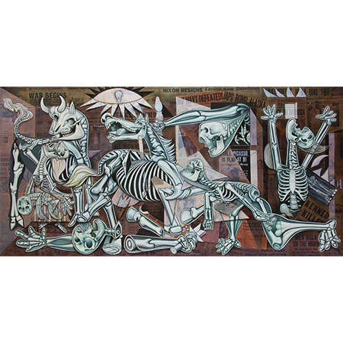
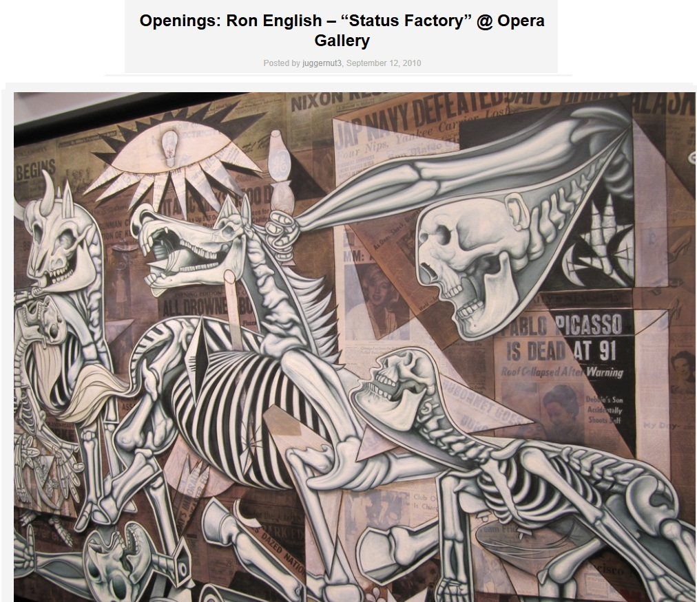
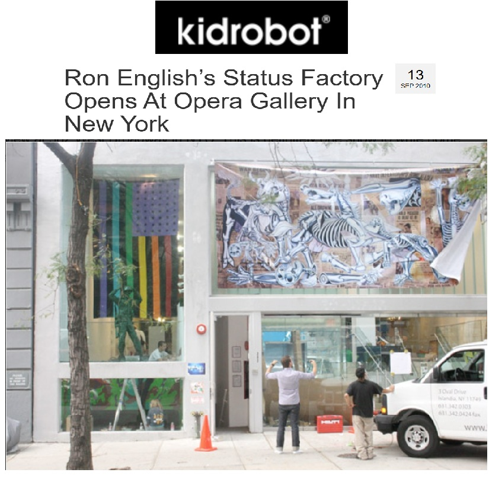
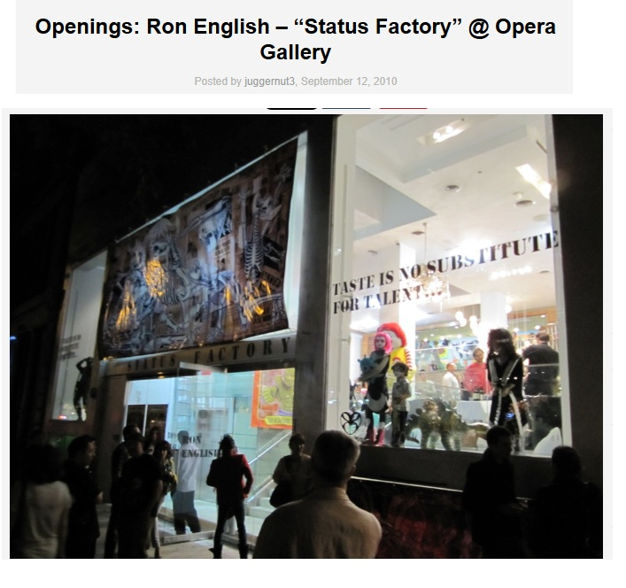
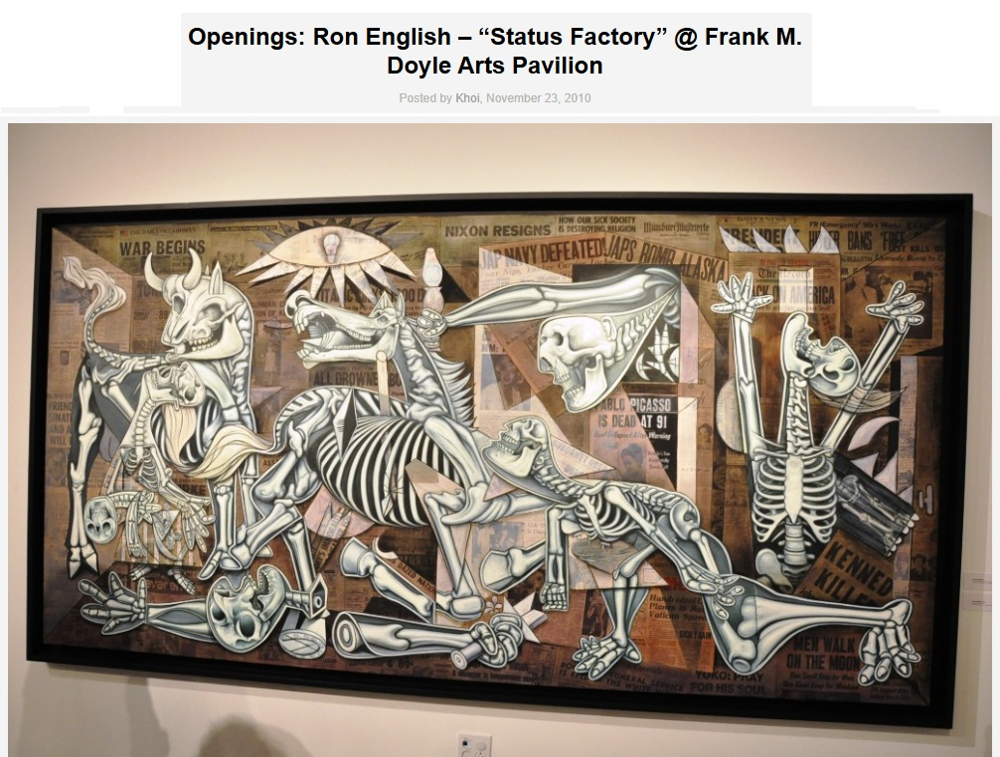

Exhibitions
Status Factory, Opera Gallery, New York, New York, US, September 12–October 29, 2010.
Status Factory – The Art of Ron English, Frank M. Doyle Arts Pavilion (Orange Coast College), Costa Mesa, California, US, November 12–December 17, 2010.
Ron English – You Are Not Here, International Museum of Art & Science (IMAS), McAllen, Texas, US, March 31–August 14, 2011.
Literature
Ron English, Death and the Eternal Forever (Korero Press, 2014), p. 148. ISBN 978-0957664920.
Notes
Preparatory material by Ron English is retained as supporting documentation for this painting.
This work references Pablo Picasso’s Guernica.
Ancillary Documentation








Selected Online Circulation
Selected examples of the work’s online circulation, reproduction, or discussion. This list is not exhaustive; it is intended to document representative appearances of the image beyond formal exhibition and publication records.